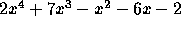
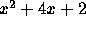

| Polynomial Factorization |
A polynomial is of degree k if the largest power of the variable in any term is no greter than k. For example,
is of degree 2. It is also of degree 3, 4, 5, ...
A polynomial with integer coefficients is "prime" if it cannot be expressed as the product of two lower-degree polynomials with integer coefficients.
Write a program to express a 4th degree polynomial with integer coefficients as the product of one or more prime polynomials.
The sample below tell us that the polynomial  has prime factors x-1, 2x+1 and  .
The input consists on several test cases, one on each line. Each test case consists on 5 integers, representing the coefficients of a degree 4 polynomial in decreasing order of the variable power from 4 to 0. The first number will never be negative or 0.
For each test case, print the integer coefficients of each prime factor on a single line, in decreasing order of variable power. The first coefficient of prime polynomials should be positive, except maybe in the last polynomial on the list. The polynomials must be printed in increasing order of degree, and when two or more degrees match they must be sorted by increasing value of coefficients from the greatest to the lowest degree. Extra factors should be added to the last polynomial on the list. Print a blank line after each test case.
2 7 -1 -6 -2 2 0 0 0 0
1 -1 2 1 1 4 2 1 0 1 0 1 0 2 0